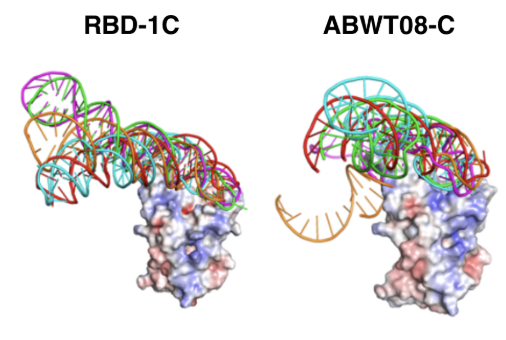
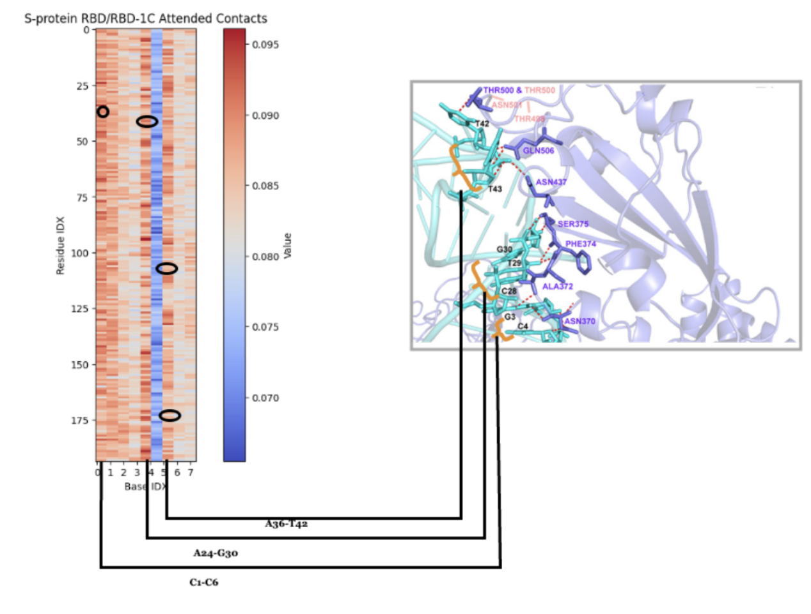
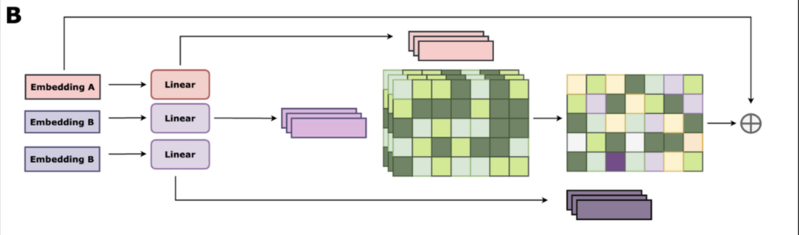
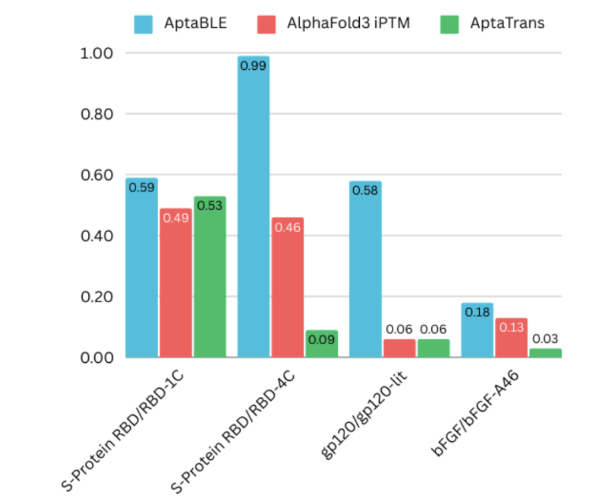
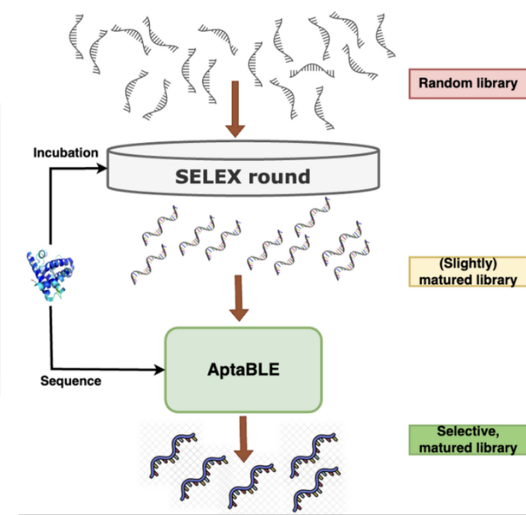

AptaBLE: A Deep Learning Platform for Protein Binder Generation
2024
Overview
In the summer of 2024, I joined this research project in collaboration between Atom Bioworks and Pranam Chatterjee's lab to develop a LLM application for portein binder generation.
Aptamers are short, single stranded DNA or RNA sequences that bind to specific targets such as proteins, small molecules, as well as cells, with high affinity and specificity. These aptamers can serve as molecular recognition elements, making them valuable in therapeutic applications, diagnostics, and targeted drug delivery as alternatives to antibodies. Aptamers are typically developed through in vitro SELEX. Despite the levels of success that have been realized through the development and enhancements in SELEX, several challenges persist. To overcome these limitations, we have developed AptaBLE (Aptamer Binding LanguagE), a large language model capable of predicting aptamer-protein interactions and generating novel aptamer sequences against diverse protein targets.
AptaBLE has become a flagship model that generates commercial revenue for Atom Bioworks.
Technical Details

The AptaBLE generated aptamer has similar binding interfaces as well established aptamers, including those w/ nanomolar binding affinity.

Receives aptamer and DNA/RNA sequence as input, tokenized as vector embeddings into self and cross attention blocks. Self attention blocks can be stacked (greater depth = greater accuraccy, generally). Cross attention blocks compare aptamer-protein embeddings and vice versa (see below). The resulting outputs are added, averaged out through mean pooling and concatenated to form a single vector embedding. MLP returns a single prediction score depending on task.

Attention maps correspond accurately to binding interfaces as predicted.

Internal cross attention architecture - Vector embeddings are represented as matrices, creating Key, Query, Value layers. Attenion score matrix compares tokens and is applied to values, then added back to original embedding for residual connection.

AptaBLE outperforms existing methods (Alphafold 3, Aptatrans) specifically in aptemer-protein binding scoring.

Proposed application of AptaBLE in SELEX optimization. AptaBLE can be used as a complementary tool to SELEX in aptamer discovery.
Contribution
- Filtered and restructured data from large protein databases (ie RBPDP) for model training.
- Deployed AptaBLE platform on Huggingface, with custom interface for user interaction.
- Conducted cost-benefit analysis of integrating AI frameworks (Wandb/TensorBoard) w/ extensive retraining.
- Developed web scraper based on Google Patents API to collect RNA binding sequences.